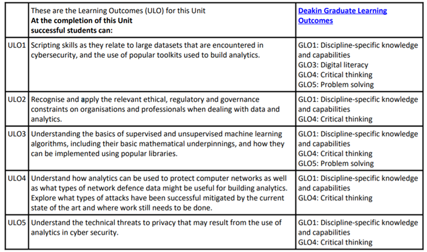

UL01 Scripting skills as they relate to large datasets that are encountered in cybersecurity, and the use of popular toolkits used to build analytics.
UL02 Recognise and apply the relevant ethical, regulatory and governance constraints on organisations and professionals when dealing with data and analytics.
UL03 Understanding the basics of supervised and unsupervised machine learning algorithms, including their basic mathematical underpinnings, and how they can be implemented using popular libraries.
UL04 Understand how analytics can be used to protect computer networks as well as what types of network defence data might be useful for building analytics. Explore what types of attacks have been successful mitigated by the current state of the art and where work still needs to be done.
UL05 Understand the technical threats to privacy that may result from the use of analytics in cyber security.
Week 1 to Week 7 will focus on the UL01, UL03 and UL04. The UL05 will be covered in Week 8 and Week9. Finally, the UL02 will be the focus of Week 10.
The ULOs are also closely related to the Deakin's Graduate Learning Outcomes:

You can access the reading list from the below link:
https://rl.talis.com/3/deakin/lists/94D00345-3E64-4FA9-71F2-99398FE4E2F6.html?lang=en-GB&login=1
Besides, you will also find the reference list at the end of each week's weekly resources.